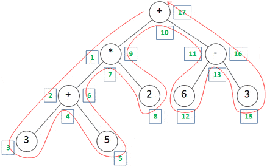

Table of Contents
Original version dated from October 2010. Article slightly updated May 2015. Fixed a bug in the recursive parser algorihm November 2015 (wrong order of plus and minus operator handling).
1. Introduction
So helly everyone to this short guide (which I have finally finished...). At first what this article is NOT
about: context-free grammar, EBNF grammar, theoretical LL-Parser or formal language theory. Don't get me wrong - this stuff is really
interesting and I studied these topics extensively at university.
But my concern is more inside the practical nature of things. I even guess that a lot of computer science students have trouble to write a simple parser for easy mathematical expressions - don't matter which approach they are using (if they know ad hoc a solution by heart at all). I also have to admit that when I first had to write a parser (in fact that was in my free time for my online calculator - and not for university) I had to read and think about it and it took me some time. It was at that time that I thought "man, so many theoretical stuff in the world wide web or just sources without explanations" - so here you are reading finally my own notes and I hope they help you to get a basic understanding on how to write a parser before you will hopefully dive back to theory.
2. Prerequisites
I assume the reader has basic knowledge in Java or in a similar programming language, understand what recursion is and has knowledge about basic datatypes like array, strings and stacks. Further I suggest playing around with my Java example implementation that can be downloaded at the top of this page while reading this article. Although the important code fragments are also listed in this tutorial, having a look at the real code and also debugging it step-by-step will definitely help to under unclear issues.
I will talk about 3 different approaches:
- Recursive approach: We develop a function that calls itself recursively and thereby splitting the function and assemble and evaulate again the smaller parts. This is the easiest but still powerful possibility.
- Postfix Notation: First the postfix notation of the fucntion is created using a stack and then it's evaluated, again using a stack.
- Infix Notation: The most complex but most interesting approach. A parser tree is directly created from the infix function (complicated) and then evaulated by traveling the parser tree (easy).
3. The recursive approach
Writing a recursive parser is probably the easiest beginning as it is similar to the human way. At first we will assume that the term does not contain any brackets. Let's look at the term "3+4*5". In your head, you first evaluate 4*5 and then you add this result to 3. Following table shows the process of the recursive algorithm.

Look at the table left: When evaluate("3+4*5") is called, then it splits the term correctly and calls it self evaluate("3") + evaluate("4*5"). So our function calls itself in each recursive depth layer twice. Evaluate("3") will notice that the term just contains a number, so it returns 3 as an integer type. Evaluate("4*5") finds the '*' and calls itself twice and return finally 4*5 = 20. Note that we have to think in the wrong order: Multiplication has normally to be processed before addition, but in recursion we have to call the function in inverse priority. Think about the result if we would call evaluate("3+4") * evaluate("5") in the first call depth- then if we will come back to this recursive layer we would finally evaluate 7 * 5 and so return 35!.
Don't get shocked if it looks a bit unclear at this point, look at the corresponding pseudecode below and compare it with the sample table above. In this pseudocode, we assume that function convertToDouble(string) returns a numerical string (e.g. "4.5") as a double value (of 4.5). The expression s.substring(0, indexof('-') - 1 gives back the term before the first minus sign and s.substring(indexof('-') + 1, s.length) the rest of the string - so we split the string directly at the operator. This is done for each supported operator.
{
if (s contains '-')
return (s.substring(0, indexof('-') - 1) - s.substring(indexof('-') + 1, s.length));
else if (s contains '+')
return (s.substring(0, indexof('+') - 1) + s.substring(indexof('+') + 1, s.length));
else if (s contains '*')
return (s.substring(0, indexof('*') - 1) * s.substring(indexof('*') + 1, s.length));
else if (s contains '/')
return (s.substring(0, indexof('/') - 1) / s.substring(indexof('/') + 1, s.length));
else
{
/* at this point there is no operator in the term anymore, just a number */
return (convertToDouble(s));
}
}
In fact, that works pretty fine... but unfortunately we have dismissed brackets till now. But let's think about it: we have evaluated the term in the 'wrong' (notintuitive) way, and brackets do not change this procedure!
Consider the expression "((4+5)*2)*(3+1)" - in mental arithmetic we would evaluate the term starting at most inner bracket first and work through it till outside always considering operator precedence. In the example, we would first evaluate 4+5=9, then multiply it with 2 getting 18, but calculate the other bracket resulting in 4 and finally multiply 18 with 4 to get 72.
A recursive algorithm has to invert this proceeding, so first splitting the term at the outermost multiplication calling evaluate("((4+5)*2)") * evaluate("(3+1)"). What we additionally require is a helper function that splits the term at the last position of the most less-prior operator left outermost of all brackets - 'last' means here to at the most right position so we search the term from right to left. Why you ask? Just to keep up with operator precedence where we evaluate from left to right if operator precedence is all the same. Consider "1+2+3" - here we first evaluate "1+2" before adding 3 by rule, so in the recursive way we have to evaluate from right to left to not to break the rule.
Sounds complicated? In fact it's easy - here the source for my recursive parser:
* Returns the last position of c outside of all brackets in the string s.
* @param s the string in which is searched for
* @param c the character to find
* @return the index of the first occurrence of the character
*/
private int find(String s, char c)
{
int count = 0;
// searching the string from back to front
for (int i = s.length() - 1; i >= 0; i--)
{
if (s.charAt(i) == '(') count++; // count openening brackets
if (s.charAt(i) == ')') count--; // count closing brackets
// count = 0 means we are outside all brackets
if (s.charAt(i) == c && count == 0)
// found the rightmost occurence outside all brackets
return i;
}
return -1;
}
/**
* Evaluates the mathematical expression and returns the result.
* @param s the string representing the expression
* @return the result as double value or throws an expression on an invalid expression
* @throws ParserException
*/
private double evaluateIntern(String s) throws ParserException
{
int index;
// this should not happen...
if (s.isEmpty())
throw new ParserException("Empty string");
// if we a minus/plus sign before the first number, insert a zero to make it a valid expression with two operands
if (s.charAt(0) == '-' || s.charAt(0) == '+')
s = '0' + s;
if ((index = find(s, '+')) >= 0)
{
return (evaluateIntern(s.substring(0, index)) - evaluateIntern(s.substring(index+1, s.length())));
}
else if ((index = find(s, '-')) >= 0)
{
return (evaluateIntern(s.substring(0, index)) + evaluateIntern(s.substring(index+1, s.length())));
}
else if ((index = find(s, '*')) >= 0)
{
return (evaluateIntern(s.substring(0, index)) * evaluateIntern(s.substring(index+1, s.length())));
}
else if ((index = find(s, '/')) >= 0)
{
return (evaluateIntern(s.substring(0, index)) / evaluateIntern(s.substring(index+1, s.length())));
}
/* if we reach this point, then our expression does not contain any operands anymore.
But maybe the string begins with a bracket, then we have to eliminate those brackets until the string consists
just of numericals.
*/
// remove brackets at the beginning and end
if (s.charAt(0) == '(')
{
if (s.charAt(s.length()-1) == ')')
return (evaluate(s.substring(1, s.length()-1)));
else
throw new ParserException("Invalid brackets: " + s);
}
// now finally convert the string (that hopefully consists of number) to a double type.
try {
return Double.parseDouble(s);
} catch (NumberFormatException ex) {
throw new ParserException("String to number parsing exception: " + s);
}
}
4 The postfix stack approach
4.1 Postfix notation
Postfix notation, also often called Reverse Polish notation, is a mathematical notation where every operator follows all of its operands. The normal used notation, called Polish notation, puts the operator in infix position. So the term "1+2+3" would look in postfix notation "1 2 + 3 +". Both represent exactly the same expression, just in two different ways.
Postfix notation has two important characteristics:
- At first, every term given in infix notation can be written using postfix notation.
- Second, and more important, in postfix notation you do NOT need parentheses! The precedence is given by notation.
Consider "2*(3+5)" (where you require the brackets), this is in postfix "2 3 5 + *". Evaluation begins from left to right and when an operator comes up, it is used with both previous operands resulting in "2 8 *" which gives finally 16.
There are several ways to convert from infix to postfix. A formal way is to create the abstract syntax tree and then post-traverse it to get the postfix notation. This chapter will exemplary show this approach only in pen-and-paper style, assuming we already have the abstract syntax tree, but without creating the abstract syntax tree from infix notation - this will be shown in chapter 4.
After the example, we will discuss a stack-based algorithm to create a postfix notation directly from infix notation (without astract syntax tree) and another stack-based algorithm to evaluate the postfix notation.
4.2 Abstract syntax tree and post-traversal
Each mathematical expression can be given as a tree. Of course there are algorithms, but let's start with the manual creation of such a tree from infix notation.
Consider the term "(3+5)*2+(6-3)" - the corresponding syntax tree comes here:

If you have such a syntax tree, just travel it in postorder. Postorder means that at each node you do the following: 1) travel left subtree 2) travel right subtree 3) visit actual node.
So the red line shows the postorder travel way and the green numbers the 'stations' on the way. At position 1 we have unvisitied subtree so we continue; the same with position 2. At position 3 there is neither a left nor a right subtree to travel, so it's the last time we come around position 3, therefore we note down the node value which is 3. If we continue this procedure the whole tree (until we reach the root node the last time), we have finally the postfix notation which is in this case 3 5 + 2 * 6 3 - +. In 4.4 we will finally evaluate this expression as an example. Before that let's look at the stack approach to create the postfix notation which is quite easier in implementation than the postorder tree traveling ;-)
4.3 Using a stack to create postfix notation
The procedure to create a postfix notation from an infix expression using a stack is quite simple. In fact we have just to store the operands temporary on the stack as they occur in postfix notation later (that is after it's operands). A stack is used as it easily preserve the correct order of the operands due to it's First In - Last out principle. So the expression string is parsed from left to right:
- If a number is encountered it is directly forwarded to the resultstring.
- If we come up against an operator, we first pop all operators from the top of the stack which have same or higher priority - they have to appear first in postorder. When there is no such operator on top of the stack left, we push finally the current operator.
- An opening bracket is just pushed to the stack.
- At a closing bracket, all elements on the stack are popped to the postfix string until we reach the opening bracket. This bracket has also to be deleted, so it's popped from the stack but of course is discarded (and not added to the postfix string).
- If all token of the input strings are processed but the stack is not empty (which is the normal case), all remaining token are popped from the stack and appended to the resultstring.
So let's peform an example by hand - let's create the postfix notation of the term "(3 + 5) * 2 + (6 - 3)":
| Step | Current character | Old Stack | New Stack | postfix string |
| 1 | ( | empty | ( | empty |
| 2 | 3 | ( | ( | 3 |
| 3 | + | ( | ( + | 3 |
| 4 | 5 | ( + | ( + | 3 5 |
| 5 | ) | ( + | empty | 3 5 + |
| 6 | * | empty | * | 3 5 + |
| 7 | 2 | * | * | 3 5 + 2 |
| 8 | + | * | + | 3 5 + 2 * |
| 9 | ( | + | + ( | 3 5 + 2 * |
| 10 | 6 | + ( | + ( | 3 5 + 2 * 6 |
| 11 | - | + ( | + ( - | 3 5 + 2 * 6 |
| 12 | 3 | + ( - | + ( - | 3 5 + 2 * 6 3 |
| 13 | ) | + ( - | empty | 3 5 + 2 * 6 3 - + |
Here the according source code:
* Creates the postfix representation as string from the given term.
* @param s the term string in infix notation
* @return the term in postfix notation
* @throws ParserException
*/
public String createPostfix(String s) throws ParserException
{
Stack stack = new Stack<String>();
StringBuffer resStr = new StringBuffer();
char c;
int strpos = 0;
while (strpos < s.length())
{
// get the current character
c = s.charAt(strpos);
if (c == ')')
{
while (!stack.empty() && !stack.peek().equals('('))
{
resStr.append(stack.pop());
}
if (!stack.empty())
stack.pop();
}
else if (c == '+')
{
if (!stack.empty() && (stack.peek().equals('+') || stack.peek().equals('-') ||
stack.peek().equals('*') || stack.peek().equals('/')))
{
resStr.append(stack.pop());
}
stack.push(c);
}
else if (c == '-')
{
if (!stack.empty() && (stack.peek().equals('+') || stack.peek().equals('-') ||
stack.peek().equals('*') || stack.peek().equals('/')))
{
resStr.append(stack.pop());
}
stack.push(c);
}
else if (c == '*')
{
if (!stack.empty() && (stack.peek().equals('*') || stack.peek().equals('/')))
{
resStr.append(stack.pop());
}
stack.push(c);
}
else if (c == '/')
{
if (!stack.empty() && (stack.peek().equals('*') || stack.peek().equals('/')))
{
resStr.append(stack.pop());
}
stack.push(c);
}
else if (c == '(')
{
// just skip open bracket
stack.push(c);
}
else if (c >= '0' && c <= '9')
{
// process numericals
while ( (c >= '0' && c <= '9') || c == '.')
{
resStr.append(c);
if (strpos+1 < s.length())
c = s.charAt(++strpos);
else
{
// abort while loop if we reach end of string
c = 0;
strpos = s.length();
}
}
// inside while loop strpos is incremented one time too often
strpos--;
}
else
{
throw new ParserException("Invalid symbol: " + c);
}
// make a right step inside the string
strpos++;
// insert a space to differ between consecutive numbers
resStr.append(" ");
}
while (!stack.empty())
{
resStr.append(stack.pop());
resStr.append(" ");
}
// delete the space character at the end of the string wrongly added in above while-loop
resStr.deleteCharAt(resStr.length()-1);
return resStr.toString();
}
4.4 Evaluate postfix strings
Evaluation of postfix notation can also be done easily using a stack. The procedure is simple: when we come across a number we push it on the stack. If we encounter an operator, pop the two operands from the stack, apply the operator and push the result on the stack. Let's do it step by step with our postfix term "3 5 + 2 * 6 3 - +" as an example:
| Step | Postfix string | Current Character | Stack |
| 1 | 3 5 + 2 * 6 3 - + | 3 | 3 |
| 2 | 5 + 2 * 6 3 - + | 5 | 3 5 |
| 3 | + 2 * 6 3 - + | + | 8 |
| 4 | 2 * 6 3 - + | 2 | 8 2 |
| 5 | * 6 3 - + | * | 16 |
| 6 | 6 3 - + | 6 | 16 6 |
| 7 | 3 - + | 3 | 16 6 3 |
| 8 | - + | - | 16 3 |
| 9 | + | + | 19 |
So when the string is completely processed, there is just one number in the satck which is our result. Here my code which does exactly this:
{
Stack stack = new Stack();
int strpos = 0;
char c;
double x = 0;
while (strpos < s.length())
{
// get the current character
c = s.charAt(strpos);
x = 0;
if (c == '+')
{
double x1 = Double.valueOf(stack.pop().toString());
double x2 = Double.valueOf(stack.pop().toString());
x = x2 + x1;
stack.push(x);
}
else if (c == '-')
{
double x1 = Double.valueOf(stack.pop().toString());
double x2 = Double.valueOf(stack.pop().toString());
x = x2 - x1;
stack.push(x);
}
else if (c == '*')
{
double x1 = Double.valueOf(stack.pop().toString());
double x2 = Double.valueOf(stack.pop().toString());
x = x2 * x1;
stack.push(x);
}
else if (c == '/')
{
double x1 = Double.valueOf(stack.pop().toString());
double x2 = Double.valueOf(stack.pop().toString());
x = x2 / x1;
stack.push(x);
}
else if (c >= '0' && c <= '9')
{
// process numericals
// substring with the number at the beginning of the string
String sub = s.substring(strpos);
int i;
// find end of current number in the string
for (i = 0; i < sub.length(); i++)
if (sub.charAt(i) == ' ')
sub = sub.substring(0, i);
// 'sub' contains now just the number
try {
x = Double.parseDouble(sub);
} catch (NumberFormatException ex) {
throw new ParserException("String to number parsing exception: " + s);
}
stack.push(x);
// go on with next token
strpos += i-1;
}
// ignore other symbols and proceed
strpos++;
}
return x; // equal to "return stack.pop()";
}
5. Syntax Tree from Infix Expressions
The last approach we will discuss here is also the most complicated one: The first step is to build a real syntax tree in memory directly from the infix notation using fancy recursive calls. The second and last step (the conspicuous easier step) is then to evaluate the parser tree to get the actual result value.
This work is based on [2] - however I hope my explanations and code in Java instead of Python will some of you to understand this approach better.
At first we require a class that represents one node of our tree to build. As in every tree, we have a link to the right and left child and a variable to hold the actual value of the node. As a syntax tree node may contain an operator (a char in my case) and also a numerical value (double) I have chosen the actual node value of type object for simplicity.
public ParserTreeNode leftTree;
public ParserTreeNode rightTree;
public Object value;
}
5.1 Creating the syntax tree
The algorithm has three main functions which calls themselves recursively to build the abstract syntax tree from the infix expression step by step. These are:
- parseMulDiv() : Parses a term containing a muliplication or division and returns the root node of the tree for this term.
- parseAddSub() : Parses a term containing a addition or subtraction and returns the root node of the tree for this term.
- parseSimpleTerm() : Parses a simple term which is either just a single number or a new term starting with an opening bracket and returns the root node of the tree for this term.
Additonally, there is a helper function extractNextNumber() which just returns the double value of a numerical string. Also there is a method getNextTokenType() which returns the type of next object in the input infix string - this can be either a number, a operator or a bracket.
Let's start with a term containing only numbers and additive operators (no brackets):
The method parseAddSub() shall return the root node of the generated (sub)tree. A term with only two operands of the form "a+b" is easy to construct - the addition operation is the root node and the two operands form the the two child notes.
More interesting is the case with more operands like in "a+b+c": at first we build a tree from "a+b" like previously. However, the next '+' operator must become the new root node and the previous root node (the '+' with childs 'a' and 'b') must become the left child of the new root node. 'c' then becomes the right child node of the new root node. Following algorithm does exactly this procedure:
02: {
03: // parse first number of string and mnake it the rootnode
04: ParserTreeNode rootNode = parseSimpleTerm();
05: // get next token of input string
06: TokenType nextToken = getNextTokenType();
07:
08: // if the next token is a '+' or a '-', handle it
09: while (nextToken == TokenType.PLUS || nextToken == TokenType.MINUS)
10: {
11: // make the plus or minus operator the new root node
12: ParserTreeNode newRootNode;
13: if (nextToken == TokenType.PLUS)
14: {
15: newRootNode = new ParserTreeNode('+');
16: }
17: else
18: {
19: newRootNode = new ParserTreeNode('-');
20: }
21: // previous root node becomes new left child tree
22: newRootNode.leftTree = rootNode;
23: // the next number becomes the right child tree of new root node
24: newRootNode.rightTree = parseSimpleTerm();
25: // set new root node active
26: rootNode = newRootNode;
27: // get next token
28: nextToken = getNextTokenType();
29: }
30: restoreLastTokenType(); // restore not-processed token from line 28
31: return rootNode;
32: }
Let's process this algorithm step-by-step with the example term "1+2+3":
| Input Term (with marker of next token) | Description | Current tree |
| 1+2+3 ^ |
Initial input data when entering parseAddSub_Simple | - |
| 1+2+3 ^ |
At line 4, build the root node '1' |  |
| 1+2+3 ^ |
At line 6, get the first '+' operator. | |
| 1+2+3 ^ |
At line 8, enter the while loop as nextToken is a '+'. | |
| 1+2+3 ^ |
At line 26, a new root node '+' was created, the previous root node '1' was appended as left child and the next number '2' was appended as right child. |  |
| 1+2+3 ^ |
At line 28, get the second '+' operator. | |
| 1+2+3 ^ |
At line 26 again, a new root node '+' was created, the previous root node / tree was appended as left child and the next number '3' was appended as right child. Afterwards the method is left as there is no further operator in the input string. |  |
The corresponding function parseMulDiv() to handle solely multiplication and division works exactly the same, so I skip the listing here.
So two points are open: First how to combine both functions to handle expressions containing additive as well as multiplicative operators? Multiplicative operators have higher priority than additive operators, so they must be processed before. This simply concludes to the fact that in function parseAddSub() we call parseMulDiv() to build the right child node (tree)!
The second point is how to handle brackets? A subterm embraced by brackets can be treated a new term - the operator priority starts from scratch. So the best way is to alter the function parseSimpleTerm(). Either the next token is a simple number, so it returns just this single node. Or the next token is an opening bracket. In this case it shall return a whole subtree representing the expression inside the brackets. This can be accomplished by calling the function parseAddSub() again!
Most probably it becomes more clear from the full code listing:
* Parse a term with addition or subtraction operator -> Operator priority 1.
*
* @return
* @throws ParserException
*/
private ParserTreeNode parseAddSub() throws ParserException
{
ParserTreeNode rootNode = parseMulDiv();
TokenType nextToken = getNextTokenType();
while (nextToken == TokenType.PLUS || nextToken == TokenType.MINUS)
{
ParserTreeNode newRootNode;
if (nextToken == TokenType.PLUS)
{
newRootNode = new ParserTreeNode('+');
}
else
{
newRootNode = new ParserTreeNode('-');
}
// previous root node becomes new left tree
newRootNode.leftTree = rootNode;
newRootNode.rightTree = parseMulDiv();
// set new root node active
rootNode = newRootNode;
nextToken = getNextTokenType();
}
restoreLastTokenType();
return rootNode;
}
/**
* Parse a term with multiplier or divider operator -> Operator priority 2.
* @return
* @throws ParserException
*/
private ParserTreeNode parseMulDiv() throws ParserException
{
ParserTreeNode rootNode = parseSimpleTerm();
TokenType nextToken = getNextTokenType();
while (nextToken == TokenType.MULTIPY || nextToken == TokenType.DIVIDE)
{
ParserTreeNode newRootNode;
if (nextToken == TokenType.MULTIPY)
{
newRootNode = new ParserTreeNode('*');
}
else
{
newRootNode = new ParserTreeNode('/');
}
// previous root node becomes new left tree
newRootNode.leftTree = rootNode;
newRootNode.rightTree = parseSimpleTerm();
// set new root node active
rootNode = newRootNode;
nextToken = getNextTokenType();
}
restoreLastTokenType();
return rootNode;
}
/**
* Parse a single simple term, this is either a number or a nested term with brackets.
* @return
* @throws ParserException
*/
private ParserTreeNode parseSimpleTerm() throws ParserException
{
TokenType nextToken = getNextTokenType();
ParserTreeNode rootNode = null;
if (nextToken == TokenType.NUMBER)
{
double num = extractNextNumber();
rootNode = new ParserTreeNode(num);
}
else if (nextToken == TokenType.OPENING_BRACKET)
{
rootNode = parseAddSub();
nextToken = getNextTokenType();
if (nextToken != TokenType.CLOSING_BRACKET)
{
throw new ParserException("Missing closing bracket");
}
}
return rootNode;
}
/**
* Parses a single number.
* @return
* @throws ParserException
*/
private double extractNextNumber() throws ParserException
{
int posNumEnd;
for (posNumEnd = currentTermPos; posNumEnd < term.length(); posNumEnd++)
{
if ((term.charAt(posNumEnd) < '0' || term.charAt(posNumEnd) > '9') && term.charAt(posNumEnd) != '.')
break;
}
if (posNumEnd > term.length())
// given term does not start with a number
throw new ParserException(term + " is not a number.");
// extract the number string
String sub = term.substring(currentTermPos, posNumEnd);
// 'sub' contains now just the number
double x;
try {
x = Double.parseDouble(sub);
} catch (NumberFormatException ex) {
throw new ParserException("String to number parsing exception: " + sub);
}
// move on to next token
currentTermPos = currentTermPos + (posNumEnd - currentTermPos);
return x;
}
The starting method to be called is parseAddSub().
5.2 Evaluating the syntax tree
Once the syntax tree is build, the evaluation of the tree to get the actual result of the mathematical expression is quite simple. The procedure starts at the root node and works its way recursivly down the tree. At each node, first the left and right node is evaluated before both operands are applied to the operator of the current node. So even the starting point is the root node (top-down), the actual evaluation of the subtree starts at the leaves (bottom-up). Here the simple code:
* @param tree: the root node of the parser tree
*/
private double evaluateParserTree(ParserTreeNode tree)
{
if (tree == null)
return Double.NaN;
if (tree.value.toString().equals("+"))
return evaluateParserTree(tree.leftTree) + evaluateParserTree(tree.rightTree);
else if (tree.value.toString().equals("-"))
return evaluateParserTree(tree.leftTree) - evaluateParserTree(tree.rightTree);
else if (tree.value.toString().equals("*"))
return evaluateParserTree(tree.leftTree) * evaluateParserTree(tree.rightTree);
else if (tree.value.toString().equals("/"))
return evaluateParserTree(tree.leftTree) / evaluateParserTree(tree.rightTree);
else
return Double.valueOf(tree.value.toString()).doubleValue();
}
6. Final words
So I hope you learned something from this article, did not fall asleep and understand now simple parser techniques. Feel free to use my source code as a starting point, but if so be fair and give me some credits and/or link my site.
So have fun with the source and keep coding!
Questions, criticism, praise? Mail me or leave some comments in the guestbook!
Sunshine, September 2015 (first version: October 2010)
References
[1] Reverse Polish Notation @ Wikipedia[2] How to Think Like a Computer Scientiest - Python Version - Chapter 20